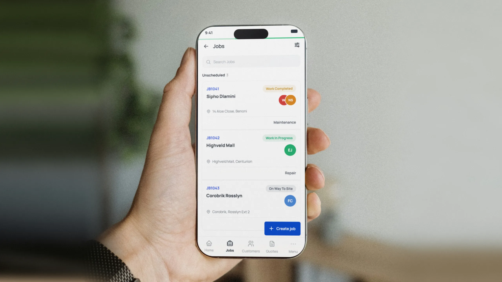
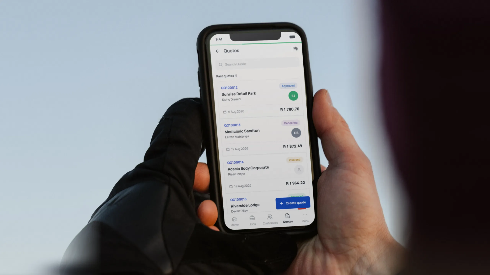

ServCraft’s original mobile app was outdated, complex and convoluted for the technicians who use it every day. Finding their way around took too many steps, and only one and a half job cards fit on screen.
I redesigned and optimised the app around how technicians work, simplifying the information hierarchy, navigation and interactions so jobs are easier to scan and manage.
Limited screen space, cumbersome navigation and rigid card layouts made everyday tasks harder than necessary.
I focused on three things: giving work more room, simplifying navigation and letting users tailor their lists to what matters.
Consolidated jobs, quotes and customers into a reusable card structure, keeping information consistent while adapting to each record type.
The job tile and its nine named slots. Hover a label to find its slot.
Most list views get by with two or three fields per row. A ServCraft job needs nine to be useful at a glance, a density few systems have to handle. I broke the component down to its atomic parts and built a flexible layout that holds all nine without overwhelming the user.
One key insight about ServCraft’s customers shaped this decision:
they’d rather have the information they need visible upfront than spend time and effort uncovering it.
Here, progressive disclosure would add friction where visibility matters most.
Each record used to sit on its own card. Now the tiles in a section sit 3px apart and only the first and last round their outer corners, so the section reads as one modern list split by lines. Each record still keeps its own tap target and pressed state.

Removed persistent navigation from the list view and made search collapse on scroll, giving job cards more screen space without losing access to search.
Watch the search field as the list scrolls down, then back up.
Combined sorting and filtering into one interface, with visible indicators for active filters.
Tap the icon, pick "My jobs today", then "Show 2 jobs". The filters appear as chips, with a count on the icon.
Introduced task-based presets so technicians can focus on their jobs while administrators can quickly find quotes that need attention.
Lists still open unfiltered. A preset stays highlighted only while the selection matches it exactly.
Each preset on the left turns on the filters on the right.
Added configurable card fields and a live preview, letting users choose which details appear on their lists.
Switching a field on adds it to the tile. At three, the rest lock until one is switched off.
The redesigned app is now released. We're watching how it performs in day-to-day use, learning from it, and following closely with the features customers ask for most.